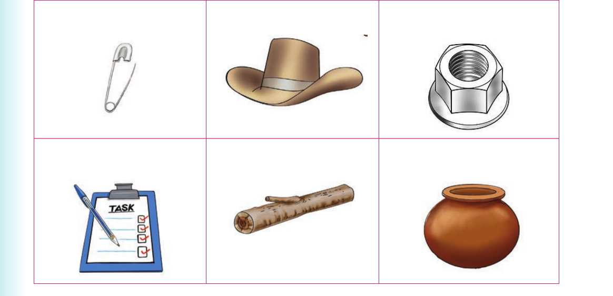

I replace middle sounds to form new words. Or I replace middle letters to sign new words
I replace middle sounds to form new words. Or I replace middle letters to sign new words.
Activity 1
1. Pronounce or sign the following words:
| mop | hot | not | leg | pit | pod | pen |
|---|
2. Replace the middle sound of the words in (1). Or replace the middle letter of the words in (1) and sign the words.
Replacing middle sounds - Activity 2
3. Name the following pictures orally or using sign language:

(a) Safety pin. (b) Hat. (c) Nut. (d) Task. (e) Log. (f) Pot.
Activity 2
1. Pronounce or sign the following words: pan, mud, ten, bat, bed, jet, cat, fun and bun.
2. Replace the middle sound of each word in (1). Or replace the middle letter of each word in (1) and sign the words.
3. Pronounce or sign the new words you have formed in (2). 4. Read aloud or sign the following sentences: (a) He looks mad in the mud. (b) A bat does not bet. (c) That is a bad bed. (d) Patrick pats cats. (e) Do not put a pen in a pan. (f) A football fan is having fun. (g) A cat can cut meat with teeth.